Weplat — Integrated Insurance Platform
Weplat is an insurance platform app that provides more personalized insurance services. To improve user retention, I contributed to developing new content and enhanced UX to resolve functional issues. I also refined UX writing to lower the barrier of the insurance domain, and designed a user journey–focused UI aligned with these improvements.
Defined the core problem
I identified issues with low retention and high user drop-off. The primary user group consisted of older users who were less familiar with mobile usage and found insurance terminology difficult to understand. Based on these insights, I established clear service goals to address these challenges.
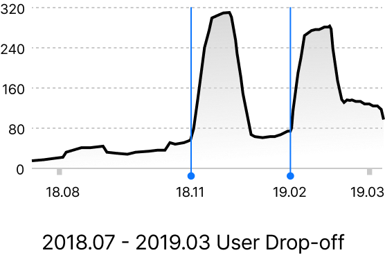
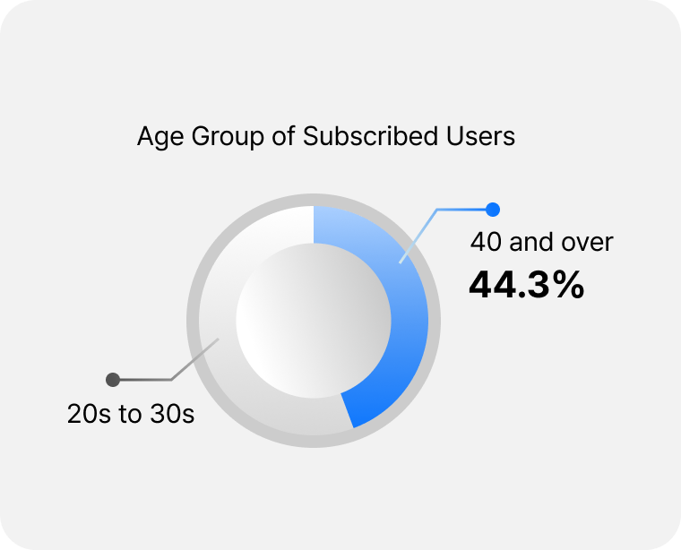
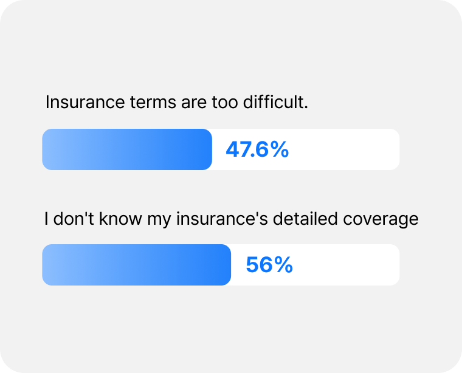
Agile Product Iteration
Swiftly translated shifting market trends into viable product concepts, rapidly testing new ideas to differentiate our offerings.
Designed and validated new digital insurance services—including genetic data integration, traffic accident consultation flows, and digital contracting—through rapid prototyping and market testing.
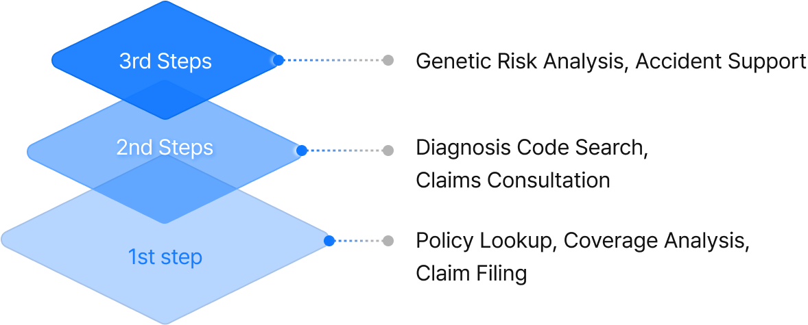
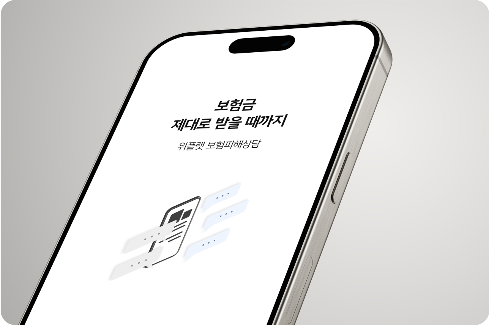
Clearer Insurance, Better UX Writing
Replaced provider-centric technical terms with scenario-based, conversational copy—such as changing “Claim Reimbursement” to “Get Your Medical Bills Refunded.” Shifted from rigid feature names to action-oriented messaging that immediately matches real-life user situations.
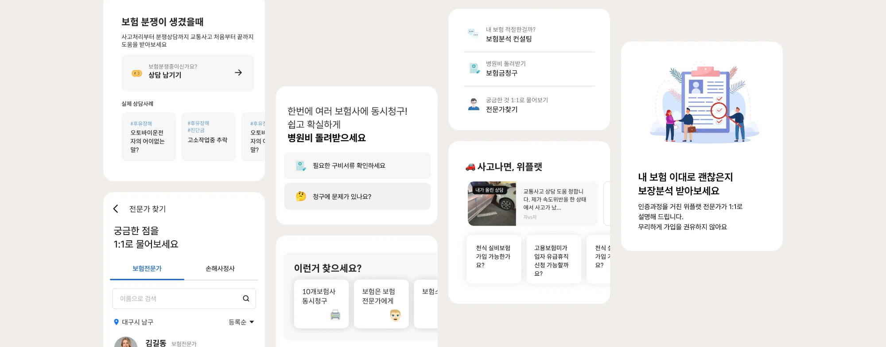
A Smoother, More Flexible UI
I shifted the UI from a feature-based structure to a user journey–focused design.
I designed a flexible flow that encourages continued exploration through relevant next steps and recommendations, rather than ending after a single interaction.
I also introduced content previews to improve clarity and predictability.
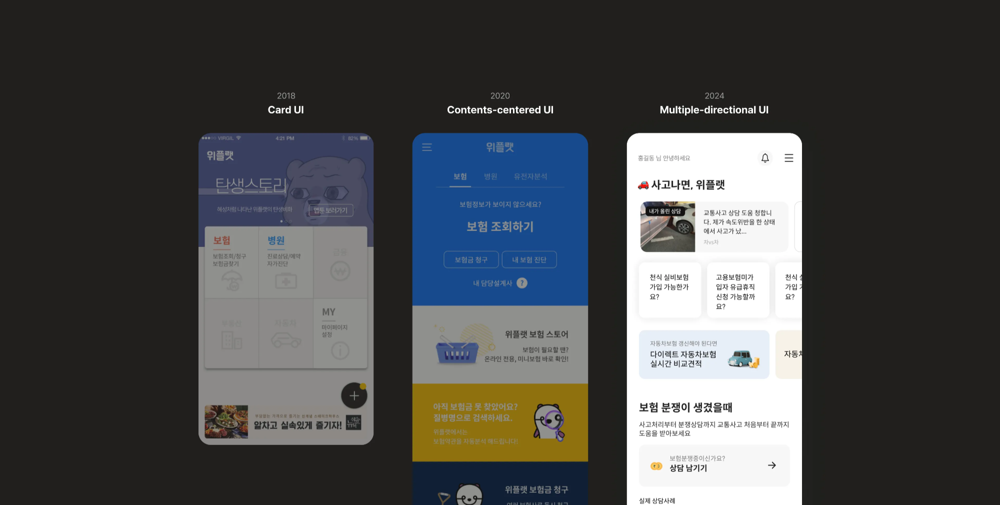
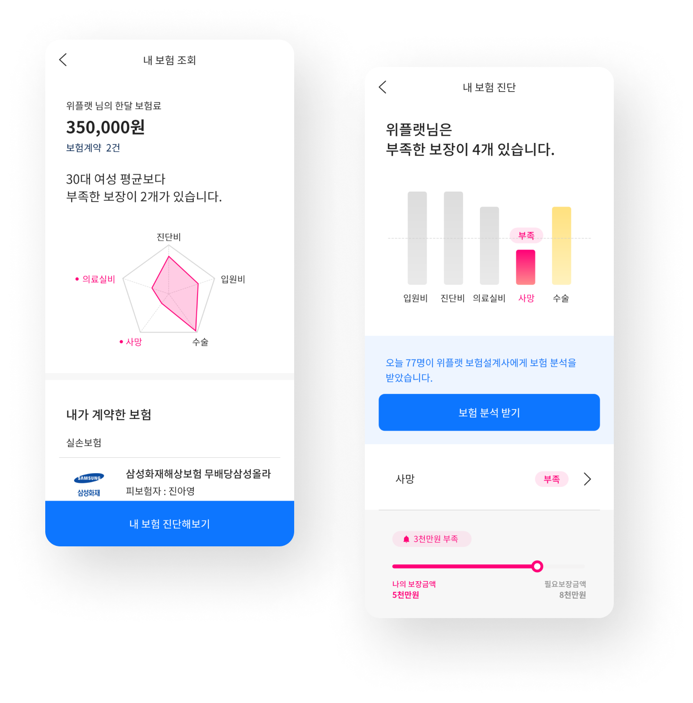
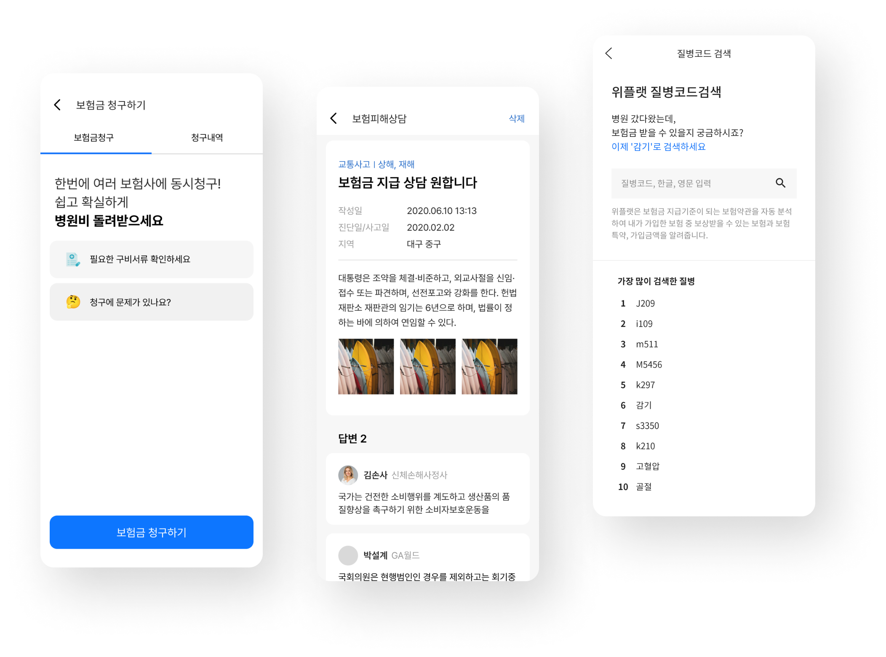
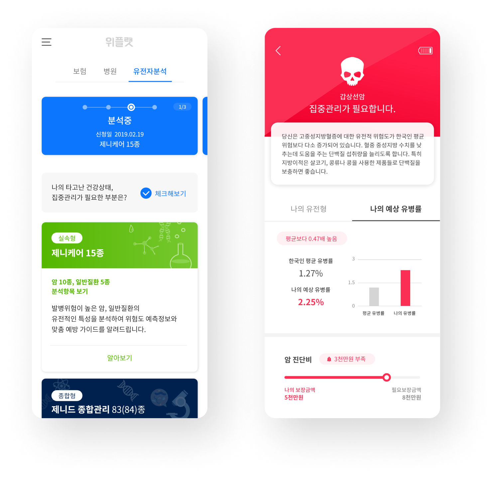
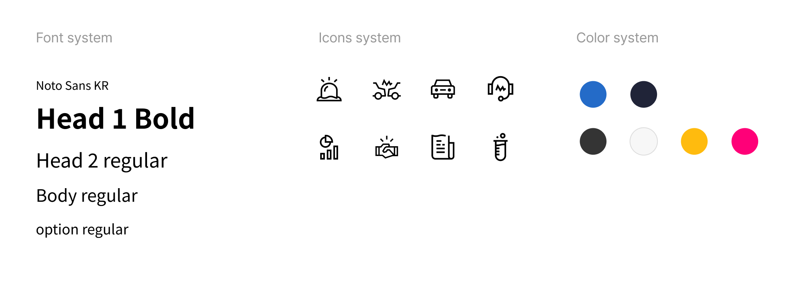
Improved key product metrics across multiple projects, reducing user drop-off by 33.5% and increasing retention by 55%.
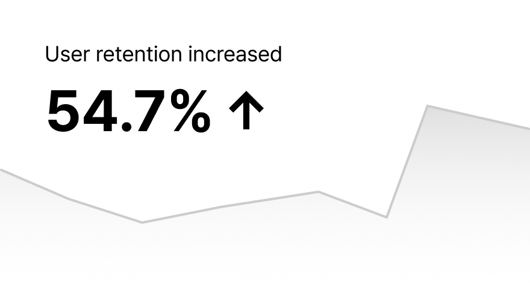
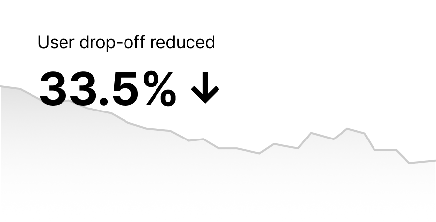
What I learned
The product showed early gains but ultimately fell short due to a lack of long-term vision.
Through this experience, I gained domain knowledge in insurance and learned how to identify real user needs—turning the outcome into a valuable learning experience.
Insight
- Quantitative data alone was not enough. Qualitative insights revealed hidden user behaviors and emotions.
- Design decisions should align with both user needs and business goals.
- A well-connected user journey drives sustained engagement beyond a single interaction.